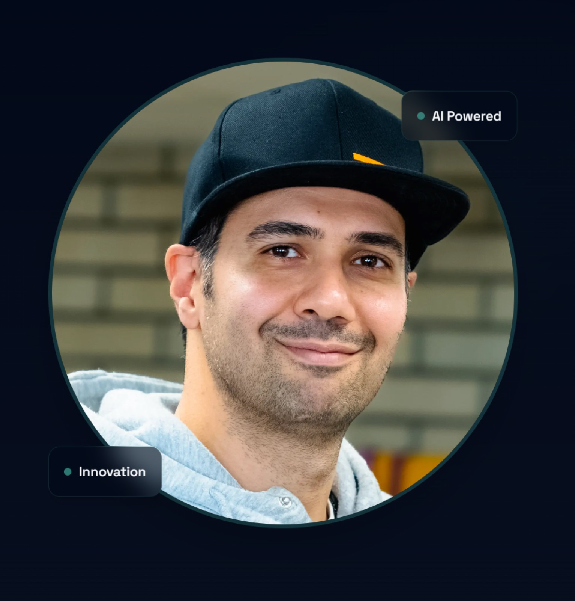

01
Understand first
Start with the challenge and the people involved.
01 / ABOUT
I build software, connect people and help ideas move from a vague starting point into something useful.
I’m a full-stack software developer based in Jyväskylä, Finland. My work connects technology with practical business needs — from web products and AI-supported tools to project coordination, mentoring and ecosystem collaboration.
I've learned that a successful digital product needs more than good code. It needs clear communication, an understanding of its users and a realistic path to delivery.
I graduated from JAMK University of Applied Sciences on 4 June 2026 with a Master of Engineering in Full Stack Software Development. My earlier experience in entrepreneurship, technology services and customer-facing roles continues to shape how I approach software today.

Professional CV
View a preview of my updated professional CV, or download the English or Finnish PDF.
The preview reflects the downloadable CV. Both PDFs contain selectable text.
HOW I WORK
I care about projects that create value for real people, not technology for its own sake.
Start with the challenge and the people involved.
Make thoughtful decisions about scope, maintainability and experience.
Communicate, test, improve and build something that lasts.